name: title class: center, middle # Machine Learning: .di-orange[Data Foundations<br>+ Algorithms & Applications] # .di-orange[Day 4] --- layout: false .left-column[ ## Agenda - Day 4 ] .right-column[ - Data Science - Data Cleansing - Data Visualization - Data Exploration - Model Deeper Dives ] ??? - --- name: data-science class: center, middle, di-style # Data Science --- class: center, middle # Data Science Pipeline <img src="images/data-science-process.png"> .footnote["Doing Data Science"] ??? - Do review of "where we are" w/ diagram - "where we are going today" w/ diagram - All of diagram - Data Science Checklist - Data Cleansing - exercises - Data Visualization - Data Exploration - Boston House Pricing case study - ML in Model Deeper Dives --- class: center, middle <img style="height: 450px;" src="images/data-science-process-2.png"> .footnote["Doing Data Science"] ??? - Your job is not to just have fun playing with algorithms - Its also to - Find the new data, probe for it - Make sense of it - Figure out what algorithms work best on it - Figure out how to explain how the algo works on the data - Then be subpoenaed for using (or misusing) it like Facebook --- # Machine Learning Checklist -- 1. Frame the problem and look at the big picture. -- 2. Get the data. -- 3. Explore the data to gain insights. -- 4. Prepare the data to better expose the underlying data patterns to Machine Learning algorithms. -- 5. Explore many different models and short-list the best ones. -- 6. Fine-tune your models and combine them into a great solution. -- 7. Present your solution. -- 8. Launch --- # Frame the problem and look at the big picture -- 1. Define the objective in business terms. -- 2. How will your solution be used? ??? - Are the proposed solutions going to work with the business case / timeframe (1 hour to filter email is a non-starter) -- 3. What are the current solutions/workarounds (if any)? ??? - How well does existing solution work / use that as a jumpstart - measure them… -- 4. How should you frame this problem (supervised/unsupervised, online/offline, etc.)? -- 5. How should performance be measured? ??? - What is performance — does the cycle time (16 hrs) match the business time window (overnight)? can you pick a different model? can you re-train somehow? what is your frequency of model retraining / new test data & measurement? -- 6. Is the performance measure aligned with the business objective? -- 7. What would be the minimum performance needed to reach the business objective? -- 8. What are comparable problems? Can you reuse experience or tools? -- 9. Is human expertise available? ??? - Human Expertise - Is there a way to do this without ML? -- 10. How would you solve the problem manually? ??? - Is all the extra effort worth it? -- 11. List the assumptions you (or others) have made so far. -- 12. Verify the assumptions if possible. --- # Get the Data -- 1. List the data you need and how much you need. -- 2. Find and document where you can get that data. -- 3. Check how much space it will take. -- 4. Check legal obligations, and get authorization if necessary. -- 5. Get access authorizations. ??? - Access - you must consider security overall - including data sensitivity, etc. -- 6. Create a workspace (with enough storage space). -- 7. Get the data. -- 8. Convert the data to a format you can easily manipulate (without changing the data itself). ??? - Data Format - perhaps export to csv or into SQL store for exploration -- 9. Ensure sensitive information is deleted or protected (e.g. anonymized). ??? - Sensitive Info - best to have an automated testable way to de-identify information -- 10. Check the size and type of data (time series, sample, geographical, etc.). ??? - Size and Type - Again SQL. If it will fit, if you are good as SQL, use it. -- 11. Sample a test set, put it aside, and never look at it (no data snooping!). --- # Explore the Data -- 1. Create a copy of the data for exploration (sampling it down to a manageable size if necessary). ??? - Copy Data - and storing the orginal. -- 2. Create a Jupyter notebook to keep a record of your data exploration. -- 3. Study each attribute and its characteristics. -- 4. For supervised learning tasks, identify the target attribute(s). -- 5. Visualize the data. ??? - Visualize Data - use scatter plots / sparse matricies / etc. - Question : what are we using visualaization for in data exploration? (to easily find patterns, redundancies, correlations) -- 6. Study the correlations between attributes. -- 7. Study how you would solve the problem manually. ??? - How To Do Manually - Always asking - could I just write 100 lines of Python? -- 8. Identify the promising transformation you may want to apply. -- 9. Identify extra data that would be useful. -- 10. Document what you have learned. ??? - Document - Jupyter Notebooks in source control (git) work great for this. --- # Prepare the Data -- 1. Clean the data. -- 2. Feature selection (if needed). ??? - Feature Selection - How do we determine the most significant variables? -- 3. Feature engineering (where appropriate). -- 4. Feature scaling. --- # Short-List Promising Models -- 1. Train many quick and dirty models from different categories (e.g., linear, naive Bayes, SVM, Random Forests, etc.) using standard parameters. -- 2. Measure and compare their performance. -- 3. Analyze the most significant variables for each algorithm. -- 4. Analyze the types of errors the models make. -- 5. Have a quick round of feature selection and engineering. -- 6. Repeat the steps 1-5 a few times. -- 7. Short-list the top 3-5 most promising models, preferring models that make different types of errors. --- # Fine-Tune the System -- 1. Fine-tune the hyperparameters using cross-validation. -- 2. Try Ensemble methods. Combining your best models will often perform better than running them individually. ??? - Ensemble - decision tree might work well, ensemble might work better (but take more time) tradeoffs.. -- 3. Once you are confident about your final model, measure its performance on the test set to estimate the generalization error. --- # Present Your Solution -- 1. Document what you have done. -- 2. Create a nice presentation. -- 3. Explain why your solution achieves the business objective. ??? - Why it achieves the business objective - and how - It's all about the Benjamins - Must to be able to interpret the model and explain it with reasons you can explain --- # Launch -- 1. Get your solution ready for production (plug into production data inputs, write unit tests, etc.). ??? - Ready for Production - do some testing with recent production data -- 2. Write monitoring code to check your system’s live performance at regular intervals and trigger alerts when it drops. ??? - Monitoring - Customers only know it doesn't seem as good as before. - Build metrics to measure the quality of model outputs - Consider fallback, circuit breaker, and other resilency patterns -- 3. Retrain your models on a regular basis on fresh data (automate as much as possible). ??? Finally - only recently has the Data Science space gained the DevOps tools to version, deploy, and run pipelines like this - like TensorFlow TODO - Brian goes back up to the full DataScience diagram here and reviews. Should we embed it here? --- class: center, middle # Data Science Pipeline <img src="images/data-science-process.png"> ??? The 8 Big Checklist Steps 1. Frame the problem and look at the big picture. 2. Get the data. 3. Explore the data to gain insights. 4. Prepare the data to better expose the underlying data patterns to Machine Learning algorithms. 5. Explore many different models and short-list the best ones. 6. Fine-tune your models and combine them into a great solution. 7. Present your solution. 8. Launch / Deploy to Production --- name: data-cleansing class: center, middle, di-style # Data Cleansing --- class: center, middle, di-style .quotation[We want the user to treat data errors with the same rigor and care that they deal with bugs in code. To promote this practice, we allow anomalies to be filed just like any software bug where they are documented, tracked, and eventually resolved.] .quotation-source[TFX: A TensorFlow-based production scale machine learning platform, Baylor et al., KDD'17] ??? - For software engineers, thes means we want to apply all the normal software developement diciplines - just to "data" code. --- class: center, middle --- # Field Validation -- * Field delineation (boundaries/lengths) -- * Verify presence of values -- * Consider units --- # Value Validation -- * Valid types -- * Patterns (regex) ??? - regex will level you up and give you wizardlike powers -- * Enumerations/factors/categories -- * Verify range of values ??? - Ranges - at SF, the descriptive summary stats told us there were outliers. Could be part of any data validation process -- * Text encoding of strings --- class: center, middle, di-style # Demo: .di-orange[How to Handle Missing Data] --- name: Demo1 # How to Handle Missing Data * there are screenshots in this presentation to maintain continuity, but let's open the notebook named __`Demo - How to Handle Missing Data.ipynb`__ and go through it together * when done, click <a href="#Exercise1">here</a> to skip screenshots ??? - Can use what we will do next to - find missing data - fix missing data - identify what data to add to replace missing data --- # Missing Data ```python >>> states = pd.Series(['alabama', 'california', np.nan, 'minnesota', 'virginia']) ``` -- ```python >>> states 0 alabama 1 california 2 NaN 3 minnesota 4 virginia dtype: object ``` -- ```python >>> states.isnull() 0 False 1 False 2 True 3 False 4 False dtype: bool ``` -- ```python >>> states.isnull().any() True >>> states.isnull().sum() 1 ``` --- ```python >>> states[2] = None ``` -- ```python >>> states.isnull() 0 False 1 False 2 True 3 False 4 False dtype: bool ``` -- ```python >>> states.dropna() 0 alabama 1 california 3 minnesota 4 virginia dtype: object ``` --- ```python >>> states.notnull() 0 True 1 True 2 False 3 True 4 True dtype: bool ``` -- ```python >>> states[states.notnull()] 0 alabama 1 california 3 minnesota 4 virginia dtype: object ``` --- ```python >>> data = pd.DataFrame([ ['alabama', np.NAN, np.NAN], ['california', 39536653, 1246], ['minnesota', 5576606, 169], [np.NAN, np.NAN, np.NAN], ['virginia', 8470020, 222] ]) ``` -- ```python >>> data 0 1 2 0 alabama NaN NaN 1 california 39536653.0 1246.0 2 minnesota 5576606.0 169.0 3 NaN NaN NaN 4 virginia 8470020.0 222.0 ``` -- ```python >>> data.dropna() 0 1 2 1 california 39536653.0 1246.0 2 minnesota 5576606.0 169.0 4 virginia 8470020.0 222.0 ``` -- ```python >>> data.dropna(how='all') 0 1 2 0 alabama NaN NaN 1 california 39536653.0 1246.0 2 minnesota 5576606.0 169.0 4 virginia 8470020.0 222.0 ``` --- ```python >>> data.dropna(axis=1, how='all') 0 1 2 0 alabama NaN NaN 1 california 39536653.0 1246.0 2 minnesota 5576606.0 169.0 3 NaN NaN NaN 4 virginia 8470020.0 222.0 ``` -- ```python >>> data.iloc[2,2] = np.NAN >>> data 0 1 2 0 alabama NaN NaN 1 california 39536653.0 1246.0 2 minnesota 5576606.0 NaN 3 NaN NaN NaN 4 virginia 8470020.0 222.0 ``` -- ```python >>> data.dropna(thresh=2) 0 1 2 1 california 39536653.0 1246.0 2 minnesota 5576606.0 NaN 4 virginia 8470020.0 222.0 ``` --- ```python >>> data.fillna(0) 0 1 2 0 alabama 0.0 0.0 1 california 39536653.0 1246.0 2 minnesota 5576606.0 0.0 3 0 0.0 0.0 4 virginia 8470020.0 222.0 ``` -- ```python >>> data.fillna({1:1000000, 2:50}) 0 1 2 0 alabama 1000000.0 50.0 1 california 39536653.0 1246.0 2 minnesota 5576606.0 50.0 3 NaN 1000000.0 50.0 4 virginia 8470020.0 222.0 ``` -- ```python >>> data.fillna(data.mean()) 0 1 2 0 alabama 17861093.0 734.0 1 california 39536653.0 1246.0 2 minnesota 5576606.0 734.0 3 NaN 17861093.0 734.0 4 virginia 8470020.0 222.0 ``` --- ```python >>> data = pd.DataFrame([ ['alabama', np.NAN, np.NAN], ['california', 39536653, 1246], ['virginia', 8470020, 222], ['california', 39536653, 1246], ['minnesota', 5576606, 169], [np.NAN, np.NAN, np.NAN], ['virginia', 8470020, 222] ]) ``` -- ```python >>> data.duplicated() 0 False 1 False 2 False 3 True 4 False 5 False 6 True dtype: bool ``` -- ```python >>> data.drop_duplicates() 0 1 2 0 alabama NaN NaN 1 california 39536653.0 1246.0 2 virginia 8470020.0 222.0 4 minnesota 5576606.0 169.0 5 NaN NaN NaN ``` --- # Replacing Text ```python >>> dollars = pd.Series(['12', '-$10', '$10,000']) >>> dollars 0 12 1 -$10 2 $10,000 dtype: object ``` -- ```python >>> dollars.str.replace('$', '') 0 12 1 -10 2 10,000 dtype: object ``` -- ```python >>> dollars 0 12 1 -$10 2 $10,000 dtype: object ``` -- ```python >>> dollars = dollars.str.replace('$', '') ``` --- # Regular Expression Replace ```python >>> dollars.apply(lambda s: re.sub('\$', '', s)) 0 12 1 -10 2 10,000 dtype: object ``` -- ```python >>> states = pd.Series(['Caaliforni.', 'Maaryl.nd', 'Al.baama', 'Virginiaa']) ``` -- ```python >>> states.apply(lambda s: re.sub('aa|\.', 'a', s)) 0 California 1 Maryland 2 Alabama 3 Virginia dtype: object ``` --- ```python >>> data = pd.read_csv('states.csv') >>> data State Abbrev Count Population 0 Alabama AL 129 4874747.0 1 Alaska AK 35 739795.0 2 American Samoa AS 1 51504.0 3 Arizona AZ 155 7016270.0 4 Arkansas AR 108 3004279.0 5 California CA 1246 39536653.0 6 Colorado CO 171 5607154.0 7 Connecticut CT 114 3588184.0 8 Delaware DE 23 961939.0 9 District of Columbia DC 33 693972.0 10 Federated States of Micronesia FM 4 NaN 11 Florida FL 439 20984400.0 12 Georgia GA 210 10429379.0 13 Guam GU 2 167358.0 14 Hawaii HI 43 1427538.0 15 Idaho ID 33 1716943.0 16 Illinois IL 391 12802023.0 17 Indiana IN 175 6666818.0 18 Iowa IA 107 3145711.0 19 Kansas KS 99 2913123.0 20 Kentucky KY 165 4454189.0 21 Louisiana LA 173 4684333.0 22 Maine ME 60 1335907.0 23 Marshall Islands MH 2 NaN 24 Maryland MD 148 6052177.0 25 Massachusetts MA 261 6859819.0 26 Michigan MI 302 9962311.0 27 Minnesota MN 169 5576606.0 ... ``` --- ```python >>> bins = [0, 10, 100, 500, 1000, 2000] ``` -- ```python >>> schools = pd.cut(data['Count'], bins) >>> schools 0 (100, 500] 1 (10, 100] 2 (0, 10] 3 (100, 500] 4 (100, 500] 5 (1000, 2000] 6 (100, 500] 7 (100, 500] 8 (10, 100] 9 (10, 100] 10 (0, 10] 11 (100, 500] 12 (100, 500] 13 (0, 10] 14 (10, 100] 15 (10, 100] ... ``` -- ```python >>> pd.value_counts(schools) (100, 500] 27 (10, 100] 21 (0, 10] 7 (500, 1000] 3 (1000, 2000] 1 Name: Count, dtype: int64 ``` --- ```python >>> data.describe() Count Population count 59.000000 5.400000e+01 mean 159.949153 6.097689e+06 std 200.886005 7.216798e+06 min 1.000000 5.150400e+04 25% 36.000000 1.499889e+06 50% 108.000000 4.036820e+06 75% 181.500000 6.977157e+06 max 1246.000000 3.953665e+07 ``` --- ```python >>> pd.qcut(data['Count'], 4) 0 (108.0, 181.5] 1 (0.999, 36.0] 2 (0.999, 36.0] 3 (108.0, 181.5] 4 (36.0, 108.0] 5 (181.5, 1246.0] 6 (108.0, 181.5] 7 (108.0, 181.5] 8 (0.999, 36.0] 9 (0.999, 36.0] 10 (0.999, 36.0] 11 (181.5, 1246.0] 12 (181.5, 1246.0] 13 (0.999, 36.0] 14 (36.0, 108.0] ... Name: Count, dtype: category Categories (4, interval[float64]): [(0.999, 36.0] < (36.0, 108.0] < (108.0, 181.5] < (181.5, 1246.0]] ``` -- ```python >>> cats = pd.qcut(data['Count'], 4) >>> pd.value_counts(cats) (181.5, 1246.0] 15 (36.0, 108.0] 15 (0.999, 36.0] 15 (108.0, 181.5] 14 Name: Count, dtype: int64 ``` --- ```python >>> pop = data['Population'] >>> pop[pop > 5000000] 3 7016270.0 5 39536653.0 6 5607154.0 11 20984400.0 12 10429379.0 16 12802023.0 17 6666818.0 24 6052177.0 25 6859819.0 26 9962311.0 27 5576606.0 29 6113532.0 34 9005644.0 36 19849399.0 37 10273419.0 40 11658609.0 44 12805537.0 47 5024369.0 49 6715984.0 50 28304596.0 54 8470020.0 55 7405743.0 57 5795483.0 ``` --- name: Exercise1 class: center, middle, di-style # Exercise: .di-orange[Data Cleansing] (open the notebook named __`Exercise 11 - Data Cleansing.ipynb`__) --- class: center, middle, di-style # Demo: .di-orange[Data Visualization] --- name: Demo2 # Data Visualization * there are screenshots in this presentation to maintain continuity, but they are actually the same as what we did in the Intro class * feel free to open the notebook named __`Demo - Data Visualization.ipynb`__ if you need it for the exercise * click <a href="#Exercise2">here</a> to skip screenshots and jump to exercise --- ```python # show.py import matplotlib.pyplot as plt import numpy as np x = np.linspace(0, 10, 100) plt.plot(x, np.sin(x)) plt.plot(x, np.cos(x)) plt.show() ``` -- ```bash > python show.py ``` -- .center[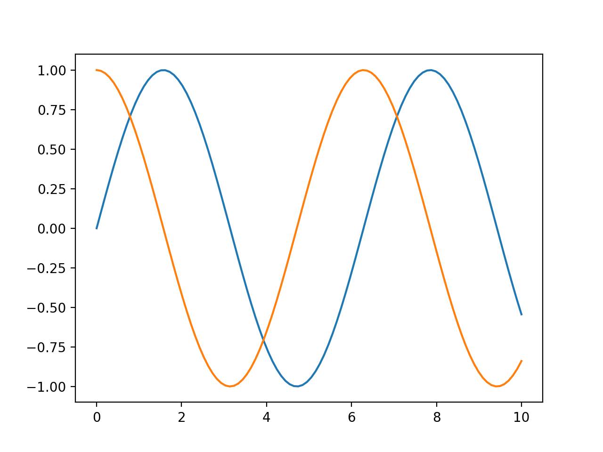] --- class: center, middle --- # Saving Image Files .center[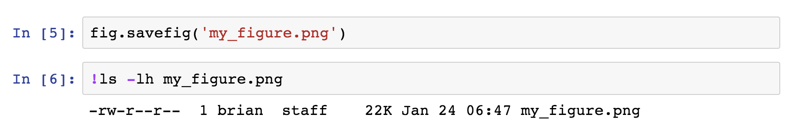] --- # Show Image Files .center[<img style="height: 400px;" src="images/vis-4.png"/>] --- # Show Available File Support .center[<img style="height: 400px;" src="images/vis-5.png"/>] --- # MATLAB-Style Interface .center[<img style="height: 500px;" src="images/vis-6.png"/>] --- # Object-Oriented Interface .center[<img style="height: 500px;" src="images/vis-7.png"/>] --- # Set up a Grid .center[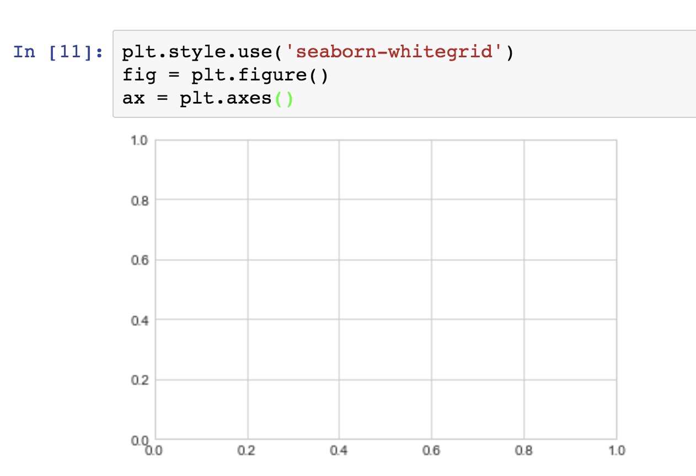] --- # Draw a Function .center[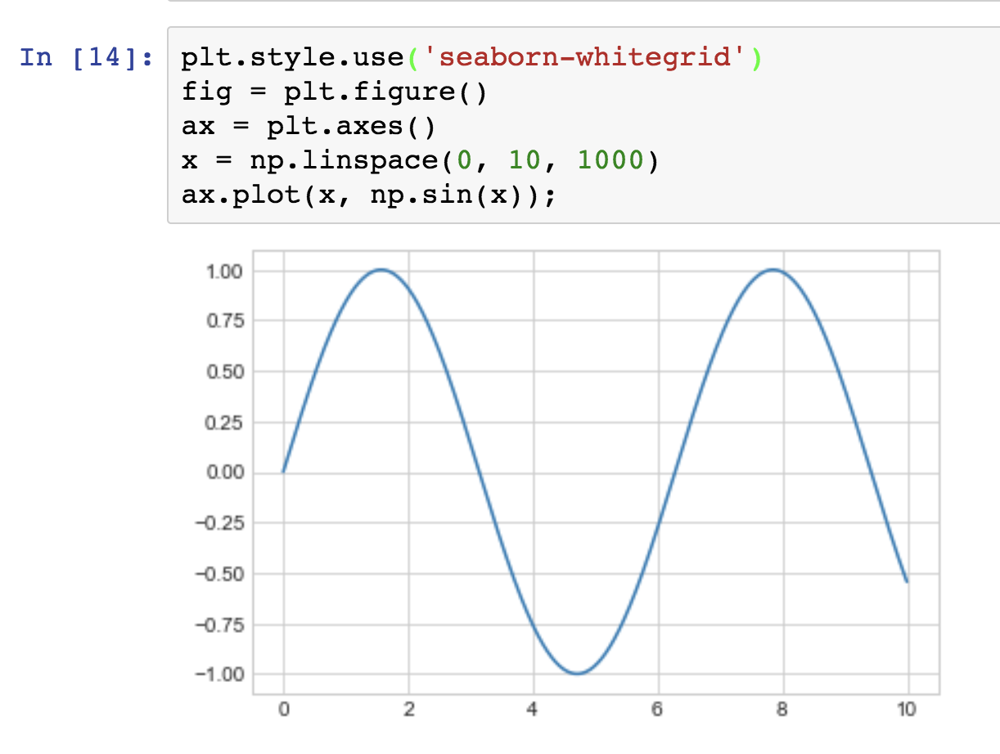] --- # Ways to Specify Color .center[<img style="height: 400px;" src="images/vis-10.png"/>] --- # Ways to Specify Line Style .center[<img style="height: 500px;" src="images/vis-11.png"/>] --- # Setting Axes Limits .center[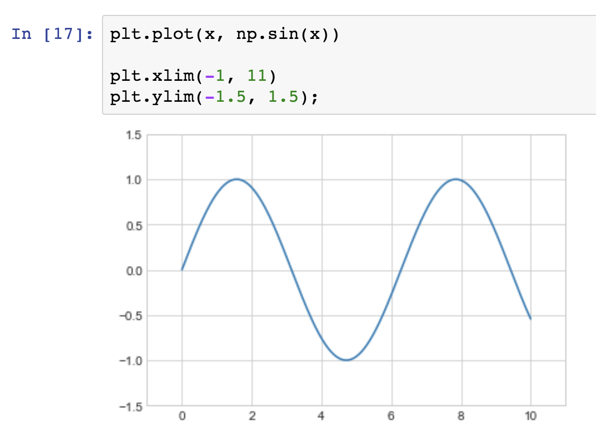] --- # Flipping the Axes Limits .center[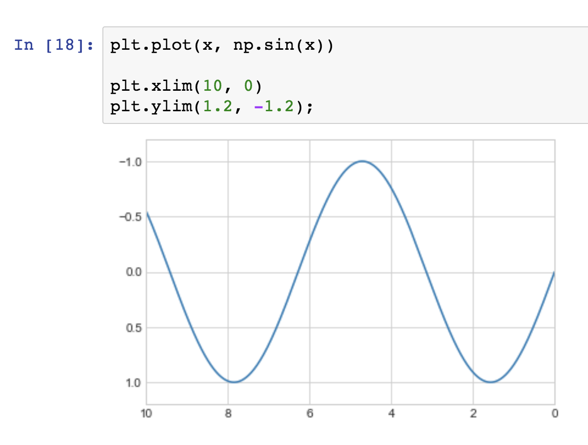] --- # Axis .center[<img style="height: 500px;" src="images/vis-14.png"/>] --- # Tight Fit .center[<img style="height: 500px;" src="images/vis-15.png"/>] --- # Equal Aspect Ratio .center[<img style="height: 500px;" src="images/vis-16.png"/>] --- # Labels .center[<img style="height: 500px;" src="images/vis-17.png"/>] --- # Legends .center[<img style="height: 500px;" src="images/vis-18.png"/>] --- # Object-Oriented Interface .center[<img style="height: 500px;" src="images/vis-19.png"/>] --- # Interface Differences .compact[ | MATLAB-Style | OO Style | |--------------|-----------------| | plt.xlabel() | ax.set_xlabel() | | plt.ylabel() | ax.set_ylabel() | | plt.xlim() | ax.set_xlim() | | plt.ylim() | ax.set_ylim() | | plt.title() | ax.set_title() | ] --- # Specifying Markers .center[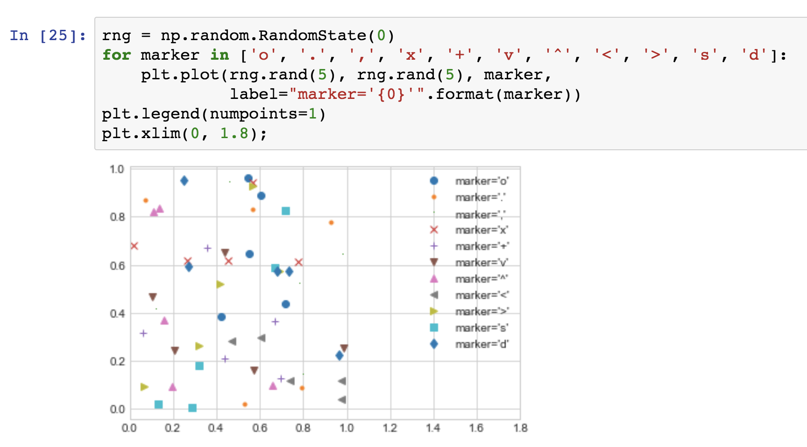] --- # Scatterplot with Colors and Sizes .center[<img style="height: 500px;" src="images/vis-21.png"/>] --- # Visualizing Multiple Dimensions .center[<img style="height: 500px;" src="images/vis-22.png"/>] --- # Histograms .center[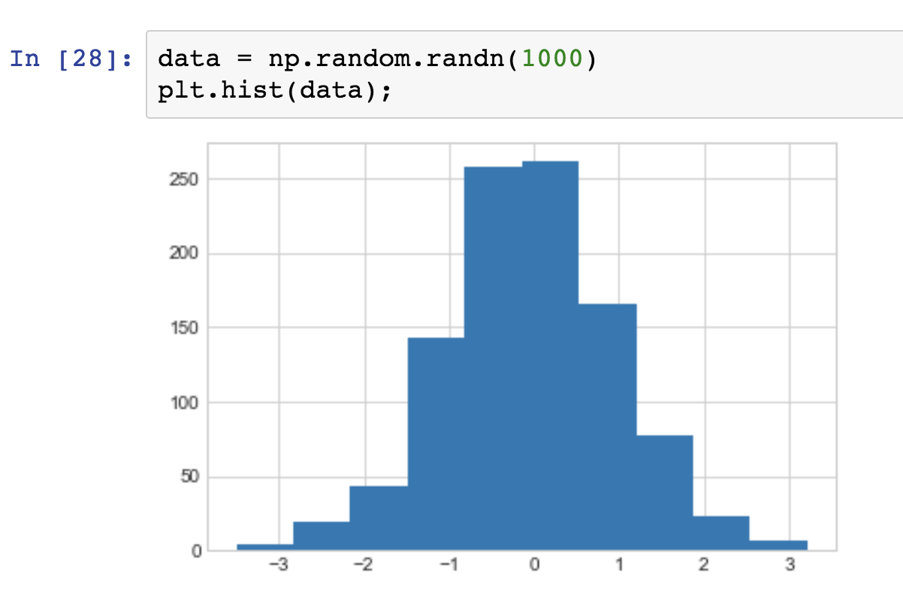] --- # Customizing Histograms .center[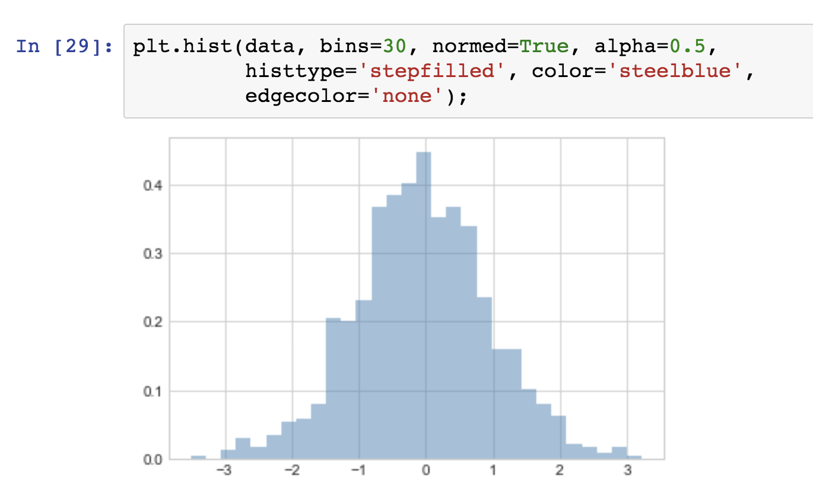] --- # Customizing Legends .center[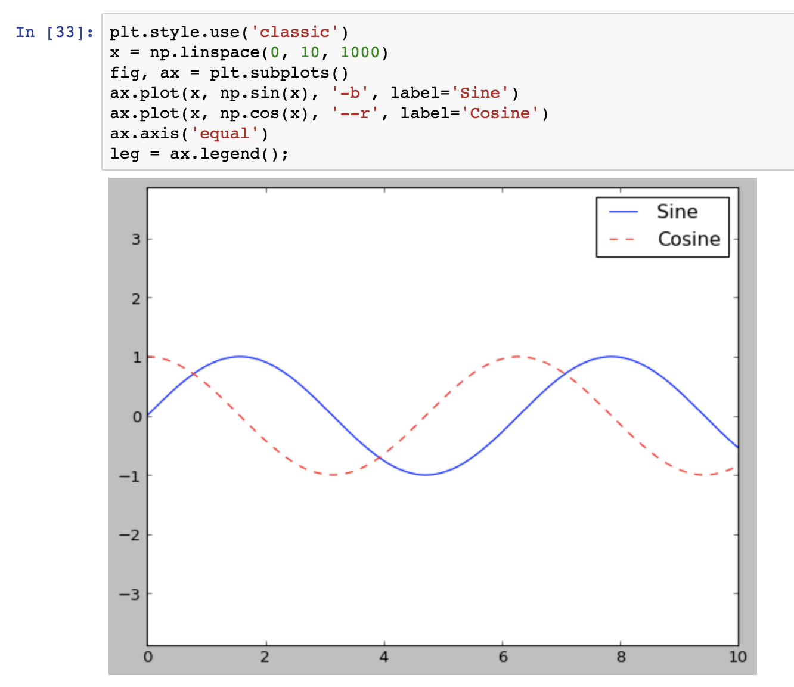] --- # Customizing Legends .center[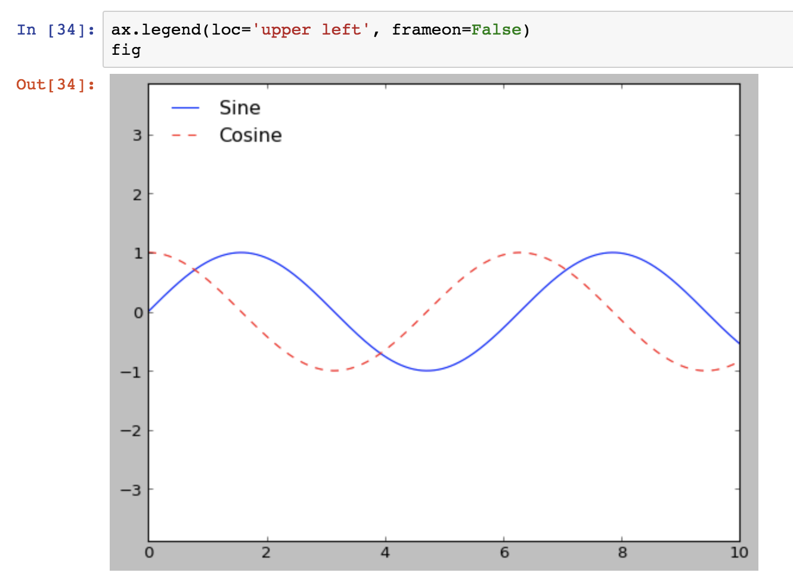] --- # Customizing Legends .center[<img style="height: 500px;" src="images/vis-27.png"/>] --- # Visualizing Handwriting Samples .center[] --- name: Exercise2 class: center, middle, di-style # Exercise: .di-orange[Data Visualization] (open the notebook named __`Exercise 12 - Data Visualization.ipynb`__) ??? --- name: Demo3 class: center, middle, di-style # Demo: .di-orange[Data Exploration] --- # Data Exploration * let's open the notebook named __`Demo - Boston Housing Data.ipynb`__ and go through it together * http://www.neural.cz/dataset-exploration-boston-house-pricing.html ??? - Continue to give you a sense of what life as a ML practitioner will look like - skills you will need - be doing day in and day out - (hence the data science checklist this morning) - To do this, we are going to use a blog article as a case study - Will introduce some new ideas and circle back to things we have seen so far - Goal is to get a feel for the steps and flow of a full analysis - TODO add a summary slide for Visualzation to tie it together - can't just end on the blog post - Blog uses somewhat dated Boston house pricing data - Orginal dataset had some racial profiling data - not this version of the dataset (though it seems like it did not make much difference anyway) - Also a case study of a formal approach w/ explainations throughout. - Let's take a look.. - See separate document (in git top level Boston-Housing-Walkthrough.txt) for notes. --- class: center, middle, di-style # Demo: .di-orange[Titanic Survivors] --- name: Demo4 # Titanic Survivors * let's open the notebook named __`Demo - Titanic Survivors .ipynb`__ and go through it together --- class: center, middle, di-style # Demo: .di-orange[Titanic Logistic Regression] --- name: Demo5 # Titanic Logistic Regression * let's open the notebook named __`Demo - Titanic Logistic Regression .ipynb`__ and go through it together * http://www.data-mania.com/blog/logistic-regression-example-in-python/ ??? - Lillian Pearson - Big Data Gal and the Titanic Data Set - Logistic regression - What does it do for us? (trying to classify things) - Spend 15 minutes reviewing this. - See in git for notes - Titanic-Walkthrough.txt - TODO - add in a slide w/ structured questions about the article - a post-reading question set to disucss --- name: Demo6 class: center, middle, di-style # Demo: .di-orange[Model Deeper Dive] --- # Model Deeper Dive * there are screenshots in this presentation to maintain continuity, but let's open the notebook named __`Demo - Model Deeper Dive.ipynb`__ and go through it together * when done, click <a href="#exercise-3">here</a> to skip screenshots --- # Iris Data ```python #Modified from http://www.agcross.com/2015/02/random-forests-scikit-learn/ #which was modified from the example written by yhat that can be found here: #http://blog.yhathq.com/posts/random-forests-in-python.html from sklearn.ensemble import RandomForestClassifier from sklearn.tree import DecisionTreeClassifier from sklearn.datasets import load_iris import numpy as np import pandas as pd import matplotlib.pyplot as plt iris = load_iris() df = pd.DataFrame(iris.data, columns=iris.feature_names) df['is_train'] = np.random.uniform(0, 1, len(df)) <= .75 df['species'] = pd.Categorical.from_codes(iris.target, iris.target_names) train, test = df[df['is_train']==True], df[df['is_train']==False] features = df.columns[0:4] y, _ = pd.factorize(train['species']) ``` ??? - Last activity of the day - Take a look at Decision Trees and Random Forest again, using Iris data and hospital survival data - Code - Pull in Random Forrest from ensemble package. - Question: Why is it in the Ensemble package? __homogenous and hetrogenious ensemble__ - talk the imports & high points - He’s not using the train/test methods we used before - Splitting the data himself here. 75% of data is for training. - Encoding if a data element is in training or test - TODO needs some kind of introduction slide about trees --- # Decision Tree ```python tree = DecisionTreeClassifier(max_depth=2) tree.fit(train[features], y) preds = iris.target_names[tree.predict(test[features])] print(pd.crosstab(index=test['species'], columns=preds, rownames=['actual'], colnames=['preds'])) ``` ??? - Question: How does the max-depth hyper parameter shape the learning process? - __we are limiting how many choices we can make. Will impact results__ - __for Titanic data, it was 2 deep. Would 1 be enough? 3 too many? - For Iris data, not that many features so 3 seems right - DTs have a strong tendency to overfit, so to many levels may overfit. -- ```python preds setosa versicolor virginica actual setosa 17 0 0 versicolor 0 5 3 virginica 0 0 9 ``` ??? - Rows are predictions. - Setosa is perfect, other two have some misprediction. - Other datasets will have more or less classification error. - Question: Does DT have measureable bias or variance? - What's bias? __model is wrong or not great__ - What's variance? __we overfitted the model to the data__ - DT has variance --- # Visualizing the Tree ```python from sklearn.tree import export_graphviz export_graphviz(tree, out_file="iris_tree.dot", feature_names=iris.feature_names, class_names=iris.target_names, rounded=True, filled=True) ``` ??? - Need to have graphviz installed __brew install graphviz__ -- ```python !dot -Tpng iris_tree.dot -o iris_tree.png ``` -- ```python from IPython.display import Image Image('iris_tree.png') ``` --- .center[] ??? - Reminder - the math behind the decision tree and how it trains changes depending on the algo used - Maximize the information gain in each level (entropy) - Minimize the classification error (high gini - if gini == 0 no misclassification) - Talk through the tree and the numbers represented. - Summary: - Pretty good results - 5 lines of code, easy to train, pretty good results. - Q: How could we improve these results? __How about random forest__ --- # Random Forest .center[ .middle[ <img style="height: 400px;" src="images/random-forest.png"> ] .footnote[http://file.scirp.org/Html/6-9101686_31887.htm] ] ??? - let’s create a lot of trees and average the results / go with the majority. - RandomForest is actually generating different tree structures for each tree in the forest. - Averaging out the variance between the approaches - Creates a more generalizable approach. --- # Random Forest ```python forest = RandomForestClassifier(n_jobs=2,n_estimators=50) forest.fit(train[features], y) preds = iris.target_names[forest.predict(test[features])] print(pd.crosstab(index=test['species'], columns=preds, rownames=['actual'], colnames=['preds'])) ``` ??? - Note the data setup is the same - this is the scikit API consistency…. - Guess on hyperparamters for now - later would do hyperparmaeter search. -- ```python preds setosa versicolor virginica actual setosa 14 0 0 versicolor 0 9 1 virginica 0 1 9 ``` ??? - Different runs will generate different outcomes. We did slightly better than DT overall. - 50 trees did good - maybe 25 would work - that’s hyper parameter search (we will discuss this concept later) - Default is minimizing gini (measure of classification error) ; other trees can be used - There is a man behind the curtain here - libaries are doing a lot for you. - Python is doing a good job setting meaningful defaults that work well most of the time --- # Visualizing the Forest -- ```python importances = forest.feature_importances_ indices = np.argsort(importances) plt.figure(1) plt.title('Feature Importances') plt.barh(range(len(indices)), importances[indices], color='b', align='center') plt.yticks(range(len(indices)), features[indices]) plt.xlabel('Relative Importance') ``` ??? - scikit learn - once you train, it’s inspectable - you can see the results / inspect (a bit) about how its working --- class: center, middle <img style="height: 450px;" src="images/rf-features.png"/> ??? - Feature importances - What’s most important, 2nd, 3rd, 4th… - How dimensions did we visualize? train off of? 3 because 4th dimension would not add a lot of value. we left out sepal width because it adds almost no value. (we will discuss this more later) - In the homework - Remember the 3 d graph of clusters from the homework assignment. - We didn't represent the sepal width because it didn't matter - We could see it in the visualization - The DT algos can quantify the importance as we see here. - Ties back to: - dimensionality reduction - feature selection --- name: exercise-3 class: center, middle, di-style # Exercise: .di-orange[Deep Dive - DecisionTree and RandomForest] open the notebook named __`Exercise 13 - Deep Dive (DecisionTree and RandomForest).ipynb`__